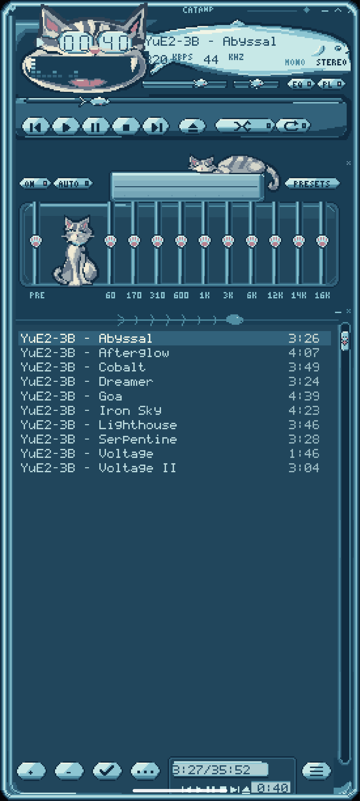
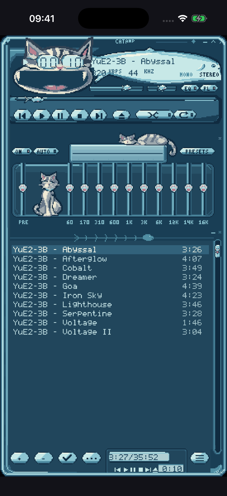
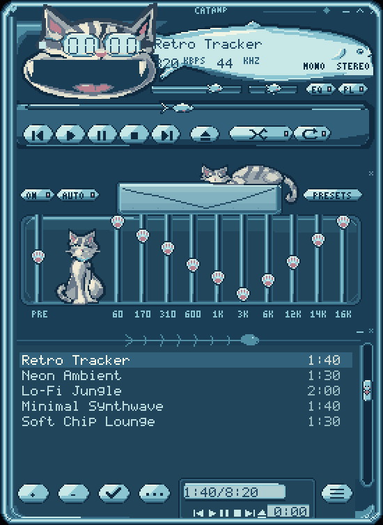

<!doctype html>
<meta charset="utf-8">
<title>Cranamp platform screenshots</title>
<style>
*{box-sizing:border-box}body{margin:0;background:#0b1119;color:#dcebf0;font-family:Arial,Helvetica,sans-serif}.board{width:1280px;height:672px;padding:38px 48px;display:flex;gap:40px;align-items:flex-start}figure{margin:0;display:flex;flex-direction:column;align-items:center}h2{font-size:19px;font-weight:500;letter-spacing:.6px;margin:0 0 23px}.phone{position:relative;padding:7px;background:linear-gradient(120deg,#77868e,#20262d 20%,#525d68 70%,#88949e);border-radius:34px;box-shadow:0 20px 28px #0008,0 0 0 1px #90a3b344}.phone:before{content:"";position:absolute;left:-3px;top:92px;width:3px;height:44px;border-radius:2px;background:#687780}.phone:after{content:"";position:absolute;right:-3px;top:122px;width:3px;height:61px;border-radius:2px;background:#687780}.screen{background:#050709;border:3px solid #07090c;border-radius:28px;overflow:hidden}.screen img{display:block;height:480px;width:auto;image-rendering:pixelated}.desktop{flex:1}.monitor{width:590px;margin-top:24px;background:linear-gradient(145deg,#6e7c86,#303943 20%,#141d26);border:1px solid #78838c;border-radius:15px;padding:12px 12px 21px;box-shadow:0 20px 30px #0006;position:relative}.monitor:after{content:"";position:absolute;width:4px;height:4px;border-radius:50%;background:#90b7c3;bottom:8px;left:50%}.display{height:398px;background:radial-gradient(ellipse at 45% 30%,#28465a,#102332 75%);display:flex;align-items:center;justify-content:center;border:1px solid #060a10;border-radius:5px;overflow:hidden}.display img{display:block;width:275px;height:377px;image-rendering:pixelated}.stand{width:88px;height:46px;background:linear-gradient(90deg,#222c36,#677581,#2d3944);clip-path:polygon(15% 0,85% 0,100% 100%,0 100%)}.base{width:220px;height:10px;border-radius:50% 50% 3px 3px;background:linear-gradient(#7b8994,#3a4752);box-shadow:0 10px 15px #0008}.platforms{font-size:12px;color:#8eabbc;margin-top:23px;letter-spacing:.4px}
</style>
<main class="board">
<figure><h2>Android</h2><div class="phone"><div class="screen"></div></div></figure>
<figure><h2>iOS</h2><div class="phone"><div class="screen"></div></div></figure>
<figure class="desktop"><h2>Desktop</h2><div class="monitor"><div class="display"></div></div><div class="stand"></div><div class="base"></div><div class="platforms">macOS · Windows · Linux</div></figure>
</main>
